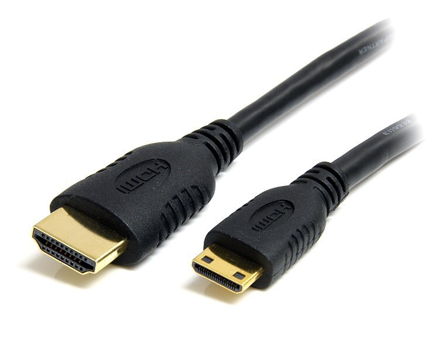

HDMI to Mini HDMI Cable
This HDMI to Mini HDMI cable is ideal for connecting cameras, tablets, and other portable devices with a Mini HDMI port to a standard HDMI input. Whether you’re reviewing footage on a larger monitor, giving a presentation, or simply enjoying media on a TV, this cable ensures a clear, stable signal.
Engineered with high-quality materials, it supports resolutions up to 4K and includes reliable shielding to minimize interference. Its flexible design makes cable routing easy while protecting connectors against wear.
Whether you’re transferring high-resolution video to an external recorder, monitoring camera output on a field monitor, or connecting your device to a home-theater setup, this HDMI to Mini HDMI cable delivers professional-grade performance you can count on.
